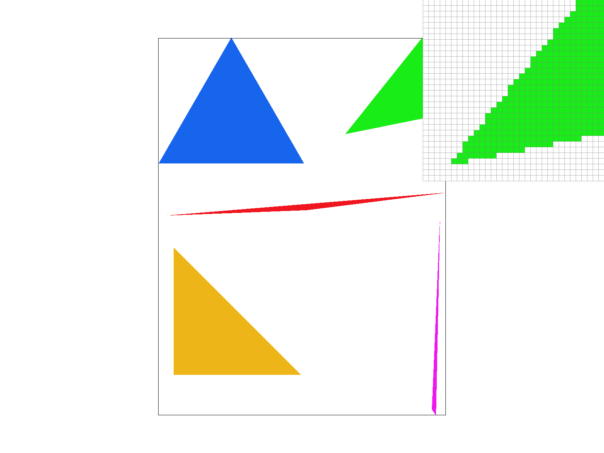
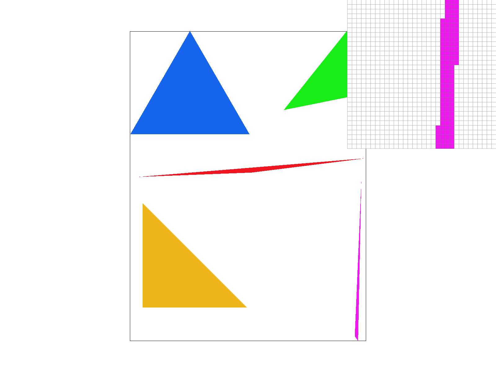
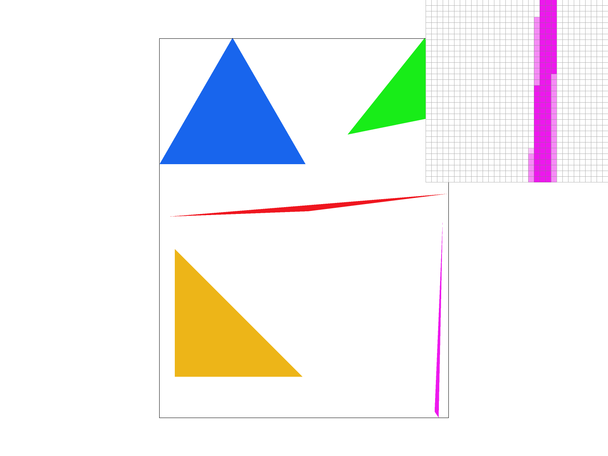
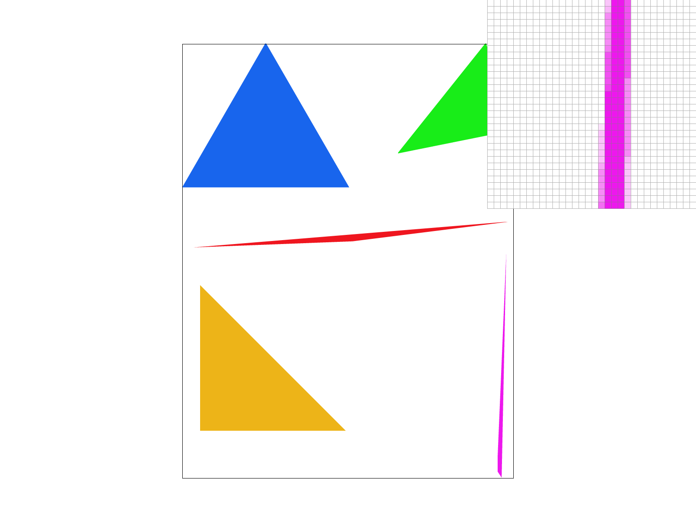
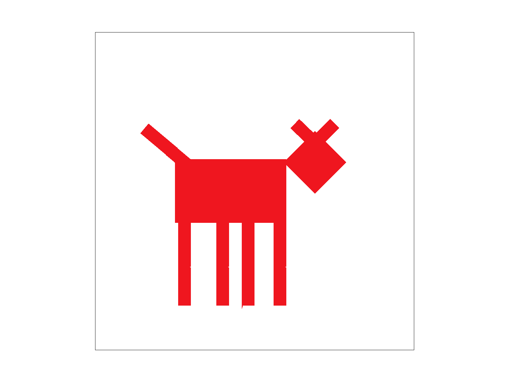
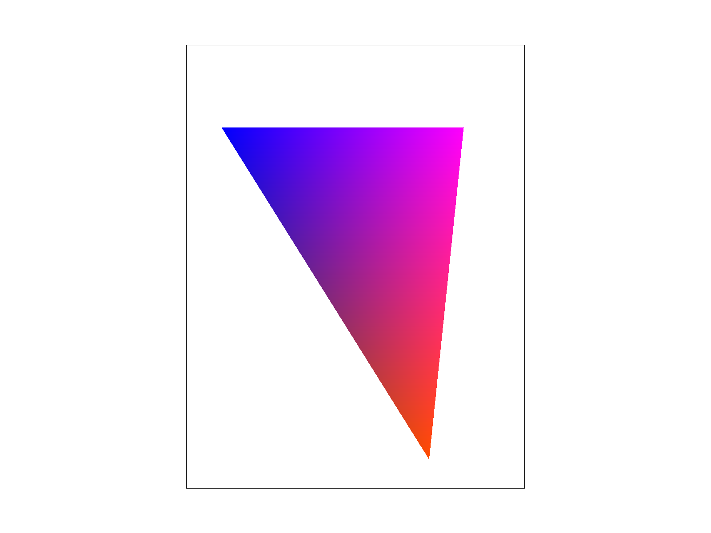
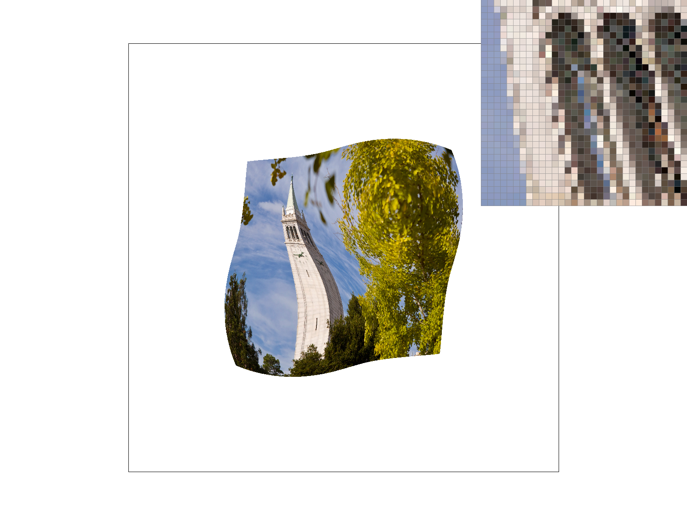
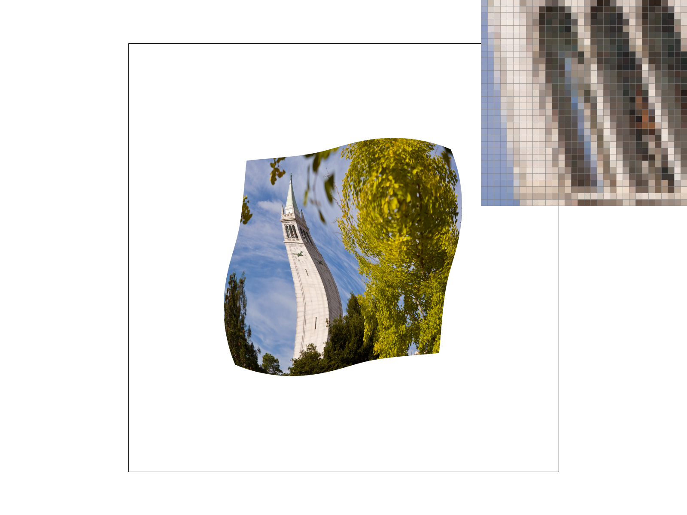

Overview
For this project I created a rasterizer which takes an image described by vectors and converts it to a series of pixels that combine to display the image to a screen. Throughout the project, I explore different sampling techniques and discuss the advantages and disadvantages for each implementation in order to achieve maximum rendering quality.
Section I: Rasterization
Part 1: Rasterizing single-color triangles
To rasterize a single triangle I implemented the Point-In-Triangle test. For the test, I first defined the pixel grid as the bounding box of the triangle. This bounding box was computed by taking the maximum and minimum value on the x-axis and rounding to the nearest integer to determine the width. Similarly, the height of the box was the rounded maximum and the minimum y-value of the triangle. Then for each pixel in the bounding box, I took the center point of the pixel and the coordinates of the triangle and computed three dot products that determined whether the pixel was within or on an edge of the triangle. If the pixel passed this test, the pixel was filled in with its assigned color. More specifically, if we let the triangle be defined as the intersection of three planes where each edge is a vector that divides the plane into two half planes, then we can determine if a point lies within these intersecting planes by computing the dot product of each edge's normal vector with the corresponding point vector of that edge. Therefore, if a point is on an edge its dot product will be zero, if a point is within the edge its dot product will be greater than zero, and if the product is less than zero the point is outside the edge. Hence, a point is within the triangle if its dot product with each edges' normal vector is greater than or equal to zero.
Point-In-Triangle Test

The image above further illustrates the Point-In-Triangle test used to determine if a pixel's center point (x, y) lies within the triangle {P_1, P_2, P_3}. It is also important to note that for my implementation I not only computed the line L_i(x, y) for each of the triangle's points in the counterclockwise direction, but also the clockwise direction to account for triangles with different winding orders.

|

|
Part 2: Antialiasing triangles
To avoid aliasing, I implemented supersampling to increase the rate at which we were sampling per pixel. With this method I used a data structure called the supersample buffer which is organized as a matrix of 1-D vectors representing the color of each supersampled subpixel. Since we want to be able to change the sample rate and dimensions of the frame buffer dynamically, I first made functions that resized the supersample buffer according to the new sample rate and frame buffer dimensions. In order to properly index into the supersample buffer, I assigned the index of a color according to a particular subpixel to be :
- index = y * width * sample rate + x * sample rate + s
such that :
- y = y value of the center of the corresponding subpixel
- width = width of the frame we are rendering- sample rate = the number of subpixels we are sampling from within each pixel
- x = the x coordinate of the center of the corresponding subpixel- s = the ith subpixel we sampled for each pixel.
I also made a function that cleared the values in the supersample buffer in order to render a new frame. To rasterize triangles using supersampling, I added two additional inner for loops into the original rasterize_triangle from part 1 which allowed me to sample coordinates of the center of each subpixel within each pixel according to the sample rate. I calculated the center of each subpixel as :
- x = (1 / 2 * sqrt(sample rate)) + (1 / sqrt(sample rate)) * x_i
where
- (1 / 2 * sqrt(sample rate)) = the distance of each subpixel's center to the next subpixel's center
- (1 / sqrt(sample rate)) = the width of each subpixel- x_i = the ith x-coordinate we are sampling.
This equation was identical for calculating the y component of the center of each subpixel. I then used the same Point-In-Triangle test from part 1 with these calculated center points to determine if a subpixel should be colored in. If a subpixel passed the Point-In-Triangle test, I added the color to fill that subpixel at its corresponding index in the supersample buffer as explained above. After sampling all the subpixels for each pixel in the frame , I had to downsample so that there was only one color corresponding to each pixel. I did this by averaging the color value of all the subpixels of a pixel. With this new averaged color value, I had to convert the CGL Color datatype, which uses floating point to represent each RGB value, to its corresponding 8 bit RGB values in order place each downsampled color from the supersample buffer into the frame buffer, the data structure used to actually display each pixel color on the screen. Using this supersampling technique and averaging down the color for each pixel blurs the edges of each triangle so that the edges of the objects in the rasterized image have a smoother appearance. This improves the quality of our rasterized image from part 1 by increasing the sampling rate such that we are able to smooth where there would have been jagged edges from just taking one sample for each pixel at a time.
Supersampling and Downsampling

The image above gives an example of supersampling with a sample rate of 4 samples per pixel. As you can see with this method, we take the center of the four subpixels and use the Point-In-Triangle test to determine which of the subpixels are in the triangle. Then, we downsample by taking the average of each of the subpixels' colors to compute the final color to fill the pixel with.
|

|

|
|

|
Part 3: Transforms
In order to move and reshape the rendered triangles in the frame, I implemented the transformation functions:
- translate: moves every point in a figure by the same distance in a given direction
- scale: enlarges or shrinks objects by a scaling factor
- rotate: rotates a figure about a fixed point by a given degree
These transformations were done using a homogeneous coordinate system in order to add a third coordinate to be able to combine non-linear with linear transformations. Given our current 2D vector we would like to transform, we can translate it to a homogeneous coordinate system by making the third variable a 1 and multiply it by our 3 x 3 transformation matrix to obtain the desired transformation. For scaling, we are simply multiply the x and y coordinates of the object's vectors by some scalar in order to stretch or shrink our object. For rotating an object, we multiply the x and y coordinates of the object's vectors by the cosine and sine of the rotational angle we desire and sum them up to create the desired result. For translating, we just add a vector to our original vector in order to move the object up and down on the screen.

|

|
Section II: Sampling
Part 4: Barycentric coordinates
Barycentric coordinates are a coordinate system that locates points within a triangle relative to its vertices. Each of the three variables in the coordinate can be seen as weights that describe how far a point is relative to a given vertex. For this project, I used barycentric coordinates in order to create smooth gradients of color within a triangle. This can be done by assigning each vertex of the triangle a color and calculating the weight of each color in a given sample location. More specifically, for each sample point, we can calculate its relative distance from each vertex point and multiply it by the color values of each vertex's corresponding color and sum them up to get a new color. This new color will then be assigned to the sample.

|

|
Part 5: "Pixel sampling" for texture mapping
In order to be able to apply textures to our triangles, I implemented pixel sampling for texture mapping. To do this, I used the same supersampling technique as decribed before, but for each subpixel point I used barycentric coordinates to calculate the weights to apply to each vertex point in order to map the point onto the texture triangle. This technique allowed me to create a (u, v) coordinate that describes the pixels location on the textured triangle relative to its location in the raster frame triangle.
With this (u,v) coordinate, I implemented two sampling methods, nearest pixel sampling and bilinear sampling, in order to find the proper textile color to assign to the subpixel. For nearest pixel sampling, given the (u,v) coordinate, I found its nearest pixel point in the texture map and assigned its color to the subpixel of the rasterized frame. To implement bilinear sampling, I found the four closest texture map pixel coordinates and their colors relative to the (u, v) coordinate and applied bilinear interpolation in order to find the appropriate color to apply to the subpixel. Bilinear interpolation first linearly interpolates two functions in the x direction and then with these functions, linearly interpolates a function in the y direction in order to calculate the resulting color.
Bilinear Interpolation

Nearest vs Bilinear Sampling
|

|
|

|
|
In the images above you can see the subtle differences in image quality for nearest pixel and bilinear interpolation sampling. In the top images the difference is less apparent since the sampling rate is so low that the aliasing makes it challenging to see any difference between the two sampling methods. In the bottom two images we can see that the right image's edges of the camponile to the sky appear slightly smoother than the left. This is because bilinear interpolation samples more pixels around the point of interest and weights them relative to their positions, creating smoother transitions between high contrast textures.
Part 6: "Level sampling" with mipmaps for texture mapping
Level Sampling is sampling that considers the density of a texture map. For textures that are far away in the frame, the amount of texture data to fill one pixel is too high. In order to solve this issue, I implemented a MipMap which is a data structure that stores the texture map at various pixel resolutions called levels. This way we can calculate the density of the pixel area we are trying to sample our texture from and index into the MipMap at the appropriate level. While this requires more memory since we have to store the texture map at different resolutions and it takes more time since it requires more computation, it greatly improves the quality of our rendered image when the scene incorporates lots of perspective. In these cases, it allows objects that are further away to retain their detail and prevent any aliasing that could have resulted from zooming in and out of the image. In order to calculate the correct level, I made barycentric coordinates for points (x + 1, y) and (x, y + 1) relative to the raster triangle vertices. Then, given the barycentric coordinates dx and dy I calculated the level we would like to sample from. This was done by calculating the differences from the x and y coordinates of dx, dy, and the (u, v) coordinate. With these differences, I then multiplied the x component by the texture's width and the y component by the texture's height in order to scale the points to the texture map. I then calculated the level = log_2(max(sqrt((du/dx)^2 + (dv/dx)^2), sqrt((du/dy)^2 + (dv/dy)^2)). Given the level, I could now sample using either nearest level sampling or trilinear level sampling.
Nearest level sampling is just taking the nearest integer level to the level calculated above and using that MipMap level to either sample using bilinear or nearest sampling and filling the pixel with the resulting color. Trilinear sampling uses nearest or bilinear sampling at the two nearest MipMap levels. These two sampled colors are then interpolated by computing the weights to apply to each color based on their distance from the original calculated level. The resulting color is then applied to the sample pixel.

|

|

|

|
From the images above, we can see that sampling at level 0 using nearest and bilinear sampling and zooming out the image lowers the quality of the image, and the details are less apparent. However, when sampling at the nearest level the image is clearer which makes it more accurate to a zoomed out image. I tried my best to demonstrate this by saving the zoomed out image and then zooming back into it to show any aliasing. Using bilinear sampling at the nearest level creates the cleanest edges out of the four images, at the cost of requiring the most computation.
Section III: Art Competition
If you are not participating in the optional art competition, don't worry about this section!